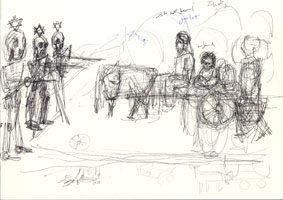

| Introduction |
| The Massacre |
| Northern Fields |
| Inside the Village |
| First Wave |
| Second Wave |
| Third Wave |
| Fourth Wave |
| Sixth |
| Seventh |
| Ninth |
| Roster of Victims |
| Witnesses |
| Artist's Notes |
| Contact me |
| ="pointer-events:none;cursor:default;" href="http://www.art.net/samia">Exit |
MEMORIAL on the 50th Anniversary of the Kafr Qasem Massacre
Those Who Were Killed in the Second Wave

Three people died in the second wave -- two men and a boy. I will let quotations from documents and witness statements tell the story: writings of Emile Habibi, statement of Abu Azmi, and statement of Abu Naser.
From the documentary essays of Emile Habibi*
The second wave followed consisting of a cart pulled by a mule. Riding the cart were Ismail Muhammad Budeir and his daughter who was then 8 year of age. Two men and a boy walked beside the cart returning home carrying vegetables. They were the martyr Muhammad Abdallah Alrahman Asi also know as �Abu Samaha� who was 50 years of age. He was from Kafr Bara but was living in Kafr Qasem. The other man was the victim Ghazi Mahmoud Darweesh, 20 years old, and the child Muhammad Abdalraheem Isaa.
At the same time lieutenant Dihan arrived with his men in a jeep. He ordered his soldiers to descend. They got out with their weapons. Dihan approached the cart and ordered Ismail Mahmoud Badeir to descend from his cart with his little daughter.
Ismail had seen the bodies that had fallen in the first wave. Thus he approached Dihan yelling: �I beg you, why do you wish to kill us?� His daughter began to cry. Dihan screamed at him to be quiet. Then Dihan asked the boy who had been walking next to the cart, Muhammad Abdalraheem Isaa, to climb the cart and drive it to the village taking with him the little daughter of Ismail.
Then Dihan gave the order to his soldiers to fire. They fired. Two were killed. They were Muhammad Abdalraheem Asi know as �Abu Samaha� and Ghazi Mahmoud Darweesh. Ismail was wounded and pretended to die. Dihan thought that Ismail was also killed, and informed his superiors saying, �Three Arabs less.�
From the witness of Abu Azmi**
I saw the bodies of the martyrs scatters on the ground. I was fourteen years old. I was returning from the plain in the company Muhammad Assi known as Abu Samaha. Gazi Darweesh, my paternal unkle Ismail mahmoud, Muhammad Abdalraheem and the daughter of Ismail, Radiyya, and the daughters of Abu Samaha.
We were traveling in two carts, and when we reached the spot of the event, the soldiers stopped us and took the men to one side. I myself continue to proceed. One of the soldiers called me screaming. I went three steps and suddenly saw 3 bodies thrown on the ground, their bicycles on top of their bodies. It appeared to me that they were the first three to die in the massacre. They were Ali Uthman Tah, Abdalraheem Ismir Budeir, and Amad Sous Friej.
I reached a distance of 50 meters and heard the soldiers speaking with the martyr Ghazi Darweesh and those who remained with him. They asked �Where are you from? Where are your identity cards?� They did not give them the opportunity to bring out their identity cards. They fired on them and killed them.
From the witness of Kafr Qasem Historian, Abu Naser***
Omar Amer known as Abu Naser, historian of the massacre, tells the story of the second wave of killing which took place on the western road to the village: "At that point the cart came with the old man and his 8 year old daughter Sameeha. There were two carts, an elongated cart and another regular cart. Abu Samaha came riding his mule. The girl Sameeha was walking behind the cart.
The Soldiers stopped them. Tawfik came with them. Awfar asked them from where they were coming from. They answered that they were coming from the plains. They [the soldiers] gave the order to shoot. Abu Samaha died quickly. Ismail Mahmoud was not hit. Dahan [one of the soldiers] came at that moment and let [the children] Abdalraheem and Sameeha go and he left Ismail Mahmoud and Ghazi and Tawfik. As soon as the children left Ismail Mahmoud Budeir saw the bodies of the others and asked them not to kill them. But Ismail was shot and fell.
Sameeha saw her father when he fell, did not yell, then left and went home. She said nothing to her mother who had cooked dinner. The mother later related that the child came and asked her �why do you prepare dinner? My father will not be coming to eat�. It appears that that is all that the child was able to say at that point in time.
Web posting: Samia A. Halaby, October 2006.
subtitled: Fourty Years After -- 1956 to 1996
Published by The Local Committee of The Communist Party, 1996, Kafr Qasem. The article Scenes of Terror � The Nine Waves is excerpted from the writings of Emile Habibi published in the Communist Party's organ Al-Ittihad with substantial quotations from the writings of Tawfik Touby, records of the military court, and witness statements. Pages 14 - 23.
To read the full text of Emil Habibi's witness, click on The Massacre in the left panel.
** "Mahmoud Rasheed Budeir, Abu Azmi, 57 years: Eye Witness"
Tanslated from the Arabic by Samia A. Halaby. Published in Al Shurouk, No. 111, 11th year of publication October, 1999, 8th page.
To read the full text of Abu Azmi's witness, click on Witnesses in the left panel.
*** Interview with Abu Naser of Kafr Qasem on October 30, 1999,
Recorded and translated from the Arabic by Samia A. Halaby
To read the full text of Abu Naser's witness, click on Witnesses in the left panel.
![[Art on the Net]](/images/artnet_button.gif)